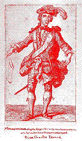
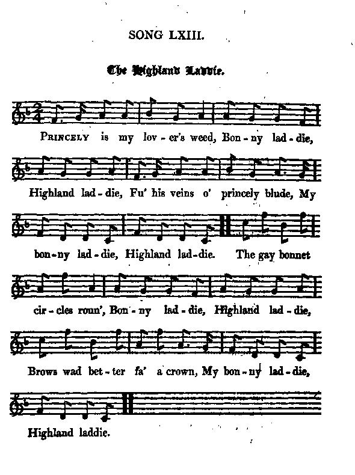
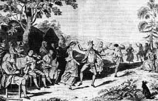
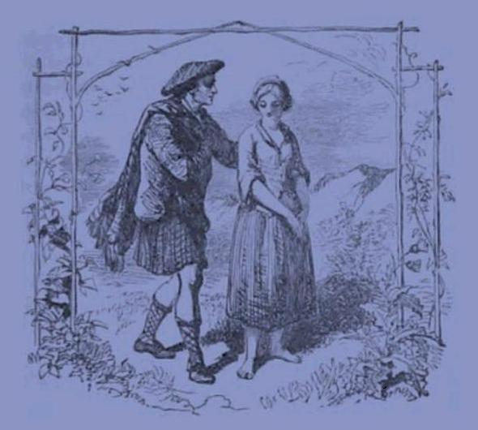
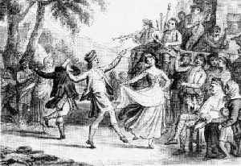

Hieland Laddy
Garçon de nos montagnes
A few Jacobite sets of lyrics (among many others!) to one of the most popular Scottish marches
|
The
"True Loyalist" (1779)
includes 2 songs to the same tune with identical structures: 8 line stanzas made up of four 7 syllable lines alternating with a burden
"Bonnie Laddie, Highland Laddie"
or
"Bonnie Lassie, Highland Lassie"
. These are archetypes for two categories (eulogies and amoebean verses) of later Jacobite songs, where the same verses are recombined or rephrased, a third category being Charles Lesly's
"Crookieden-songs"
.
Hogg knows no less than 6 different airs (tunes) suiting these songs. |
Tune - Mélodie
"Bonnie Laddie, Highland Laddie"
Original version (Gow's Second Repository 1802)
Sequenced by Christian Souchon
|
To the tune:
Tune first published under the title "Cockleshell" in Playford 's "Apollo's Banquet" (London, 1690 ) and "Dancing Master", 11th edition of 1701. It then appears in the "Drummond Castle Manuscript", inscribed "A collection of Country Dances written for the use of His Grace the Duke of Perth, By Dav. Young, 1734." Earliest printing in Robert Bremner (1720 - 1789, music seller in Edinburgh)'s 1757 Collection Among the non-Jacobite versions, several shanties (going back at least to the 1820's) are found: capstan, "stamp and go", halyard songs as well as a Dundee whalers' song: ("BLHL" is for "Bonnie laddie, Highland laddie") Where have ye been all the day? BLHL I did see ye down the glen,BLHL I didn't see ye near the burn,BLHL No, I was not down the glen, I joined a ship, went a-sailing, Sailed far north , and went a-whaling... Source "The Fiddler's Companion" (cf. Liens). Regulations known as the Cardwell reforms of 1881 required from all British Army Highland Regiments that they should use "Highland Laddie" as their Regimental March. Over time many regiments had managed to return to their pre-Cardwell marches. On the occasion of the establishment of the Royal Regiment of Scotland in 2005, that brought about the disappearance of all Scottish historic infantry regiments, a new Regimental March was adopted, "Scotland the Brave" (with no Jacobite reminiscences! here squenced by Barry Taylor, cf. links.) A Piper , Bill Millin , played "Bonnie Laddie" during the Scottish landing on Sword Beach. Source: Wikipedia Article "Highland Laddie". Prince Charles Edward's handsome bearing and adoption of the Highland garb exercised a great fascination over the people of Scotland, as the countless versions of the song with the ever repeated burden "Bonnie laddie, Highland laddie" clearly demonstrate.
|
  |
A propos de la mélodie:
Mélodie publiée pour la première fois sous le titre "Coquille de noix" dans le "Banquet d'Apollon" (Londres 1690 ) et le "Maître à danser", édition de 1701, de Playford. On la trouve ensuite dans le "Manuscrit du Château Drummond" portant l'inscription "Recueil de contredanses constitué à l'usage de S.E. le Duc de Perth par Dav. Young, 1734." Elle fut imprimée pour la première fois par Robert Bremner (1720 - 1789), marchand de musique à Édimbourg pour sa collection de 1757. Parmi les versions non-Jacobites, on trouve plusieurs chants de marins (qui remontent au moins aux années 1820); chants de cabestan, d'affalement, de drisse, ainsi qu'un chant de baleinier: ("FNGM"="Fier garçon de nos montagnes") Où étais-tu tout ce temps? FGNM On t'a vu descendre le glen. FGNM Mais tu n'étais pas près du ruisseau. FGNM Non, je n'étais pas en bas du glen. Je me suis embarqué sur un bateau Qui a filé plein nord pour chasser la baleine... Source "The Fiddler's Companion" (cf. Liens). Des règlements connus sous le nom de Réforme Cardwell et datant de 1881 exigeaient que tous les régiments de Highlanders de l'armée britannique aient comme musique "Highland Laddie". Les années passant, plusieurs régiments avaient repris les marches qui leur étaient propres avant Cardwell. Lors de la création du Régiment royal d'Écosse en 2005, qui entraîna la disparition de tous les régiments d'infanterie historiques, et on affecta à ce successeur unique la marche "L'Écosse la Brave" (pure de toute réminiscence Jacobite! ici, harmonisée par Barry Taylor, cf. liens.) Un sonneur, Bill Millin , joua "Bonnie Laddie" durant le débarquement des Ecossais à la tête de plage "Sword" en juin 1944. Source: Wikipedia Article "Highland Laddie". Sa prestance naturelle et le choix qu'il fit de revêtir le costume des Hautes Terres valurent au Prince Charles Édouard, auprès d'un grand nombre dEcossais une popularité enthousiaste qui s'exprime dans d'innombrables versions de ce chant où se répète, comme une litanie, la formule: "Bonnie laddie, Highland laddie" (Beau jeune homme, Jeune homme des Highlands). |
1° The Pipers play, the Trumpets sound
Bonny Lassie, Lawland Lassie
Au son des fifres et trompettes
Jeune fille des Basses Terres
from
Hogg's "Jacobite Relics" 2nd Series
N°106
and from William Aitchison's Jacobite Melodies, (Edinburgh, 1823), N°133 ("Highland Lad")
|
The following remark found in "Jacobite Songs and Ballads", a collection published in 1887 also applies to the next versions of "Highland Laddie":
"The Minstrels of 1745 very strongly showed the "cunning of their craft" by mixing up of love and loyalty to the Chevalier in their songs. This song is an instance among hundreds." It is remarkable that some of these songs should stage the "classical" couple "Highland lad" and "Lowland lass" (never the contrary). Concerning this ambiguous relationship, see the note to the tune "Duncan Davison" in Geordie Whelp's Testament . |
La remarque suivante est tirées des "Chants et ballades Jacobites", publiées en 1887. Elle vaut tant pour cette version précédente de "Highland Laddie" que pour les suivantes:
Les ménestrels de 1745 démontraient leur "maîtrise de leur art" en mêlant dans leurs chants attachement sentimental et fidélité au Chevalier . En voici un exemple entre mille." On notera que plusieurs de ces chants mettent en scène le couple "classique", garçon des Hautes Terres - fille des Basses Terres, jamais l'inverse. Cf. à ce sujet la remarque à propos de la mélodie "Duncan Davison" dans le testament de Geordie . |

|
 LAWLAND LASSIE 1. He . The pipers play , the trumpets sound, Bonny lassie, Lawland lassie, And a' the hills a name resound, My bonny lassie, Lawland lassie, That maun every heart invite, Bonny lassie, Lawland lassie, For freedom and our prince to fight, My bonny lassie, Lawland lassie. 2. She . In vain you strive to sooth my pain Bonny laddie, Highland laddie, With that much lov'd and glorious name, My bonny laddie, Highland laddie. I, too fond maid, gave you a heart, Bonny laddie, Highland laddie, With which you now so freely part, My bonny laddie, Highland laddie. 3. He . No passion could with me prevail, Bonny lassie, Lawland lassie, When king and country's in the scale, My bonny lassie, Lawland lassie. Yet a conflict in my soul, Bonny lassie, Lawland lassie, Tells me love will not control, My bonny lassie, Lawland lassie. 4. She . A high pretext! I'll sooner die, Bonny laddie, Highland laddie, Than see you thus inconstant fly, My bonny laddie, Highland laddie, And leave me to th' insulting crew, Bonny laddie, Highland laddie, Of Whigs to mock for trusting you, My bonny laddie, Highland laddie. 5. He . Dear Jenny, I my leave maun take, Bonny lassie, Lawland lassie, Yet (I) never will my love forsake, My bonny lassie, Lawland lassie. Then why should my dear lass repine, Bonny lassie, Lawland lassie ? For Charles shall reign, and she 'll be mine, Bonny lassie, Lawland lassie. 6. She . My fondness never shall control, Bonny laddie, Highland laddie, The gen'rous ardour of your soul, Bonny laddie, Highland laddie. Then let the sun turn east away, Bonny laddie, Highland laddie, Ere aught your manly courage stay, Bonny laddie, Highland laddie. 7. He . Your charms, your sense, your noble mind, Bonny lassie, Lawland lassie, Wad make the heart o' savage kind, Bonny lassie, Lawland lassie. For me, my sole delight shall be, Bonny lassie, Lawland lassie, My prince's right, and love of thee, Bonny lassie, Lawland lassie. 8. She . Go, for yourself procure renown, Bonny laddie, Highland laddie, And for your lawful king his crown, My bonny laddie, Highland laddie And only then hope you to find, Bonny laddie, Highland laddie, Your Jenny constant to your mind, My bonny laddie, Highland laddie. Source: "I copied it from the MSs. sent me by John Stewart, Esq., younger of Dalguise" (Hogg) |
 THE HIGHLAND LAD & LAWLAND LASS 1. HE. Trumpets sound and cannons roar, Bonny lassie, Lawland lassie, And a' the hills with echoes roar, Bonny lassie, Lawland lassie, Glory and honour now invite Bonny lassie, Lawland lassie, For freedom and my King to fight, My bonny lassie, Lawland lassie. 2. SHE. (2.2) But still I will keep firm and true Bonny laddie, Highland laddie, And till death I'll follow you Bonny laddie, Highland laddie, (2.1.) I, too fond maid, gave you a heart, Bonny laddie, Highland laddie, With which you now so freely part, My bonny laddie, Highland laddie. 3. HE. No passion could with me prevail, Bonny lassie, Lawland lassie, When king and country's in the scale, Bonny lassie, Lawland lassie. Yet a(Though the) conflict in my soul, Bonny lassie, Lawland lassie, Tells me love too much does rule, My bonny lassie, Lawland lassie. 4. SHE. Ah! dull pretence! I'd sooner die, Bonny laddie, Highland laddie, Than see you thus inconstant fly: Bonny laddie, Highland laddie, Leave me to the insulting foe, Bonny laddie, Highland laddie, Of W[hi]gs, a mock for trust in you, Bonny laddie, Highland laddie. 5. HE. Though, Jeanie, I my love(?) must take, Bonny lassie, Lawland lassie, I never will my love forsake, Bonny lassie, Lawland lassie. Be now content, no more repine, Bonny lassie, Lawland lassie, S[tuar]t shall reign, and you'll be mine, Bonny lassie, Lawland lassie. 5 bis. SHE. While thus abandoned to my smart, Bonny laddie, Highland laddie, To one more fair you'll give your heart, Bonny laddie, Highland laddie; And, what still gives me greater pain, Bonny laddie, Highland laddie, Death may for ever you detain. Bonny laddie, Highland laddie. 5 ter. HE. None else shall ever have a share, Bonny lassie, Lawland lassie, But you and honour of my care, Bonny lassie, Lawland lassie; And death no terror e'er can bring, Bonny lassie, Lawland lassie, While I am fighting for my KING. Bonny lassie, Lawland lassie. 6. SHE. (6.2.) My fondness shall no more control, Bonny laddie, Highland laddie, Thy gen'rous and heroic soul, Bonny laddie, Highland laddie. (6.1.) The sun a backward course shall take Bonny laddie, Highland laddie, Ere aught your manly courage shake, Bonny laddie, Highland laddie. 7. HE. Your charms, your sense, your noble mind, Bonny lassie, Lawland lassie, Wou'd make the most abandoned, kind, Bonny lassie, Lawland lassie. For you and C (harle]s I'll freely fight, Bonny lassie, Lawland lassie, No object else can give delight, Bonny lassie, Lawland lassie. 8. SHE. Go, for yourself procure renown, Bonny laddie, Highland laddie, And for your lawful K[in]g his Crown, Bonny laddie, Highland laddie And then victorious, you will won, Bonny laddie, Highland laddie, A constant Jeanie to your mind, Bonny laddie, Highland laddie. From the "True Loyalist", Page 51, 1779. |
 JEUNE FILLE DES BASSES TERRES 1. Lui . Au son des fifres, des cors, Jeune fille des Basses Terres, Un nom résonne loin et fort Jeune fille des Basses Terres, Il incite quiconque a du cœur Jeune fille des Basses Terres, A soutenir le libérateur. Jeune fille des Basses Terres, 2. Elle . Avec ce nom c'est en vain Beau jeune homme de nos montagnes Qu'on apaise mon chagrin, Beau jeune homme de nos montagnes Trop éprise, j'engageai ma foi. Beau jeune homme de nos montagnes Peu t'importe, tu fuis loin de moi! Beau jeune homme de nos montagnes 3. Lui . Mettre en balance on ne doit Jeune fille des Basses Terres, L'amour et l'honneur du roi Jeune fille des Basses Terres, Du conflit qui déchire mon cœur Jeune fille des Basses Terres, L'amour ne saurait sortir vainqueur. Jeune fille des Basses Terres, 4. Elle . Prétexte! Plutôt mourir, Beau jeune homme de nos montagnes Qu'inconstant, te laisser fuir, Beau jeune homme de nos montagnes En butte aux lazzi des Whigs méchants Beau jeune homme de nos montagnes Qui me verront un cœur si confiant. Beau jeune homme de nos montagnes 5. Lui . Jeanne, il me faut prendre congé Jeune fille des Basses Terres, Mais à jamais je t'aimerai, Jeune fille des Basses Terres, Pourquoi pleurer? Charles règnera, Jeune fille des Basses Terres, Et, chère âme, tu seras à moi. Jeune fille des Basses Terres, 5 bis. Elle . Me livrant à la douleur, Beau jeune homme de nos montagnes Vers une autre ira ton cœur; Beau jeune homme de nos montagnes Ou, ce qui me rend plus triste encor, Beau jeune homme de nos montagnes Tu seras emporté par la mort. Beau jeune homme de nos montagnes 5 ter. Lui . Rien, hors toi-même et l'honneur, Jeune fille des Basses Terres, Ne trouve place en mon cœur! Jeune fille des Basses Terres, Et jamais la mort ne m'effraiera, Jeune fille des Basses Terres, Tant que je lutterai pour mon roi. Jeune fille des Basses Terres. 6. Elle . Ma tendre affection ne peut Beau jeune homme de nos montagnes Dompter ton âme de feu. Beau jeune homme de nos montagnes Seul le soleil tournant à rebours Beau jeune homme de nos montagnes Pourrait la détourner de son cours. Beau jeune homme de nos montagnes 7. Lui . Tant de charme, tant d'esprit, Jeune fille des Basses Terres, Le plus sauvage eût fléchi! Jeune fille des Basses Terres, Mais mes seules passions ici-bas Jeune fille des Basses Terres, Sont ton amour, mon prince et ses droits. Jeune fille des Basses Terres. 8. Elle . Va donc glaner des lauriers, Beau jeune homme de nos montagnes Et le vrai roi couronner! Beau jeune homme de nos montagnes Puis reviens-moi. Tu peux l'espérer: Beau jeune homme de nos montagnes Jeanne te garde fidélité. Beau jeune homme de nos montagnes (Trad. Christian Souchon (c) 2010) Traduction du texte de Hogg complété par le texte du "Vrai Loyaliste" pour les strophes manquantes chez Hogg. |
2° Where ha' ye been a' the day?
Où étais-tu tout ce temps?
Lyrics often sung to the pipe tune.|
According to Andrew Kuntz's "Fiddler's Companion" (cf links) this set of words was often sung to the pipe tune version of the melody.
In the present case the "Highland Laddy" archetype seems to be "contaminated", at the beginning, by a series of songs more or less closely connected with the theme found in the Breton ballad, "Sir Nann" , featuring a man who comes home and dies because he was a victim to poison or cursed by an otherworld being: ( "Lord Rendal" , "Henry my son", "My son Tammy" ) and, astonishingly enough, the nursery rhyme "My boy Willie", that are, however, sung to different tunes. |
Selon l'indication d'Andrew Kuntz dans son" Fiddler's Companion" (cf. liens), ces paroles accompagnent souvent la mélodie dans sa version pour la cornemuse.
En l'occurrence, l'archétype "Highland Laddie" est influencé, au début, par une autre série de chants sur la légende qui fournit le thème de la ballade bretonne "Sire Nann" où l'on voit le héros rentrer chez lui pour mourir, victime de poison ou de la malédiction d'un être de l'autre-monde: ( "Lord Rendal" , "Henry my son", "My son Tammy" ) et bizarrement, la chanson de nourrice "My boy Willie", lesquels ont cependant des mélodies bien distinctes. |
|
HIGHLAN' LADDIE
1. Where ha' ye been a' the day? Bonnie laddie, Hielan' laddie Saw ye him that's far awa' Bonnie laddie, Hielan' laddie On his head a bonnet blue Bonnie laddie, Hielan' laddie Tartan plaid and Hielan' trews Bonnie laddie, Hielan' laddie 2. When he drew his gude braid-sword Bonnie laddie, Hielan' laddie Then he gave his royal word. Bonnie laddie, Hielan' laddie Frae the field he ne'er wad flee Bonnie laddie, Hielan' laddie Wi' his friends wad live or dee.(*) Bonnie laddie, Hielan' laddie 3. Geordie sits in Charlie's chair Bonnie laddie, Hielan' laddie But I think he'll no bide there. Bonnie laddie, Hielan' laddie Charlie yet shall mount the throne Bonnie laddie, Hielan' laddie Weel ye ken it is his own. Bonnie laddie, Hielan' laddie (*) The day before the battle of Prestonpans the Prince had drawn his sword in presence of his army, exclaiming: " My friends I have flung away the scabbard! " |
A SONG from "THE TRUE LOYALIST" page 50
4.2 For then we a' fu' glad will be Bonnie laddie, Highland laddie When we his majesty do see Bonnie laddie, Highland laddie 2.1 But when the Hero did appear, Bonnie laddie, Highland laddie C[op]e and his men were seiz'd wi' fear Bonnie laddie, Highland laddie 2.2. Then he boldly drew his sword Bonnie laddie, Highland laddie Then he gave his royal word. Bonnie laddie, Highland laddie 3.1. That from the field he would not fly Bonnie laddie, Highland laddie But with his friends would live or die Bonnie laddie, Hieland laddie. 4.1 Here's a health to J[ame]s our K[in]g Bonnie laddie, Highland laddie God send him soon o'er us to r[ei]gn Bonnie laddie, Highland laddie 3.2 I hope to see him mont the th[ron]e Bonnie laddie, Highland laddie G[eorg]e, and all his foes, begone. Bonnie laddie, Highland laddie For the first verse (1.1 & 1.2) see The bonniest Lad . |
FIER GARCON DE NOS MONTAGNES
1. Où étais-tu tout ce temps? Fier garçon de nos montagnes Dis, l'as-tu vu s'approchant, Fier garçon de nos montagnes Coiffé de son bleu bonnet, Fier garçon de nos montagnes Vêtu des trews et du plaid? Fier garçon de nos montagnes 2. Il dégaina hardiment Fier garçon de nos montagnes Et fit le royal serment Fier garçon de nos montagnes De ne point fuir le combat Fier garçon de nos montagnes D'être à nous ou n'être pas. Fier garçon de nos montagnes. (*) 3. George est un usurpateur Fier garçon de nos montagnes Qui vit ses dernières heures. Fier garçon de nos montagnes Charlie, reprends lui le trône, Fier garçon de nos montagnes C'est le tien, c'est ta couronne! Fier garçon de nos montagnes La veille de la bataille de Prestonpans, Charles avait brandi son épée en présence de tous en s'écriant: "Mes amis, j'ai jeté le fourreau!" (Trad. Ch.Souchon(c)2005) |
3° Princely is my Lover's Weed
Mon bien-aimé est de souche princière
from Hogg's "Jacobite Relics" 2nd Series N°63 (1821)Ascribed to Allan Cunningham (by Robert Malcolm in "Jacobite Minstrelsy", 1828)
Attribué à Allan Cunningham (par Robert Malcolm dans "Jacobite Minstrelsy", 1828).
|
This Song was communicated originally by Allan Cunningham to Mr. Cromek, who published it in his
"Remains of Nithsdale and Galloway Song"
, as taken down from the mouth of a young girl, who learned it from an old woman, who was a Roman catholic. It is shrewdly suspected, however, that the aforesaid Allan Cunningham wrote the same himself.
Hogg says there are six different airs under the name of "The Highland laddie" , and in his Relics he gives what he calls the oldest, which is sung to a very ancient Song, thus beginning: "l canna get my mare ta'en, Bonnie laddie, Highland Laddie, Master had she never nane, My bonnie Highland laddie. Take a rip an' wile her name, Bonnie laddie. Highland laddie. Nought like huffing by the wame, My bonnie Highland laddie." He thinks it probable that this has likewise been a Jacobite song, but he does not remember any more of it . The other five of the six "airs" also fitting the "Highland Laddie" songs might be: Crookieden 1st tune (Cf. the song "Crookieden") , McDonald's Gathering (Cf. Geordie sits in Charlie's Chair") , The Bonniest Lad that e'er I saw , on the next page , Lord Randall's Bride and My son Tammy ( see song N°2 above, tunes sequenced by Ch. Souchon). |
Ce chant fut communiqué par Allan Cunningham à M. Cromek qui le publia dans ses
"Reliques du chant de Nithdale et de Galloway"
, comme étant recueilli auprès d'une jeune fille qui le tenait elle-même d'une vieille femme, une catholique. On a toute raison de croire cependant que ledit Allan Cunningham en est l'auteur.
Hogg affirme qu'il y a six airs différents qui portent le titre de "Highland Laddie" et dans ses "Reliques Jacobites", il en donne ce qu'il pense être la plus ancienne version que l'on chante sur un texte très ancien commençant ainsi: "Comment vendrai-je ma jument, Joli garçon de nos montagnes? Un être désobéissant. Joli garçon de nos montagnes, Qu'on la rudoie, qu'on la flatte, Joli garçon de nos montagnes, Sa mauvaise humeur éclate. Joli garçon de nos montagnes." Il pense qu'il doit s'agir également d'un ancien chant Jacobite dont il a tout oublié à part cette strophe. Les cinq autres "airs" adaptés aux couplets "Highland Laddie" pourraient être: Crookieden 1ère mélodie , (Cf. la chanson "Crookieden") Le Rassemblement des McDonald , (Cf. "Geordie occupe le siège de Charlie") , Le plus beau gars que j'aie vu sur la page suivante , La fiancée de Lord Randall et Mon fils Thomas (cf chant n°2 ci-dessus, mélodies arrangées par Ch. Souchon). |
|
THE HIGHLAND LADDIE
1. Princely is my lover's weed, Bonny laddie, Highland laddie; Fu' his veins o' princely blude, My bonnie laddie, Highland laddie. The gay bonnet circles roun', Bonnie laddie, Highland laddie, Brows wad better fa' a crown, My bonnie laddie, Highland laddie. 2. There's a hand the sceptre bruiks, Bonnie laddie, Highland laddie, Better fa's the butcher's creuks, My bonnie laddie, Highland laddie. There's a hand the braid-sword draws, Bonnie laddie, Highland laddie, The gowden sceptre seemlier fa's, My bonnie laddie, Highland laddie. 3. He's the best piper i' the north, Bonnie laddie, Highland laddie; An' has dung a' ayont the Forth, My bonnie laddie, Highland laddie. Soon at the Tweed he mints to blaw, Bonnie laddie, Highland laddie; Here's the lad ance far awa'! The bonnie laddie, Highland laddie! 4. There's nae a Southron fiddler's hum, Bonnie laddie, Highland laddie, Can bide the war pipe's deadlie strum, My bonnie laddie, Highland laddie. An' he'll raise sic an eldritch drone, Bonnie laddie, Highland laddie; He'll wake the snorers round the throne. My bonnie laddie, Highland laddie. 5. And the targe and braid-sword's twang, Bonnie laddie, Highland laddie; To hastier march will gar them gang, My bonnie laddie, Highland laddie. Till free his daddie's chair he'll blaw, Bonnie laddie, Highland laddie; ' Here's the lad ance far awa',' My bonnie laddie, Highland laddie. |
JEUNE HOMME DES HAUTES TERRES
1. De noble souche est mon ami, Beau jeune homme des Hautes Terres. Un sang princier coule en lui. Beau jeune homme des Hautes Terres. S'il est coiffé d'un gai bonnet rond, Beau jeune homme des Hautes Terres. Une couronne ornera son front! Beau jeune homme des Hautes Terres. 2. Le Sceptre est dans la main d'un gueux. Beau jeune homme des Hautes Terres. Croc de boucher lui sierrait mieux. Beau jeune homme des Hautes Terres. Une autre main tient la large-épée, Beau jeune homme des Hautes Terres. A brandir le sceptre destinée. Beau jeune homme des Hautes Terres. 3. C'est le meilleur sonneur du Nord. Beau jeune homme des Hautes Terres. Le pays au delà du Forth Beau jeune homme des Hautes Terres. L'a vu vaincre. La Tweed à présent Beau jeune homme des Hautes Terres. L'entend jouer toujours plus avant. Beau jeune homme des Hautes Terres. 4. Aucun vielleux des Lowlands Beau jeune homme des Hautes Terres. Ne survit à ses accents Beau jeune homme des Hautes Terres. Il va faire jaillir le bourdon, Beau jeune homme des Hautes Terres. Si haut que tous se réveilleront. Beau jeune homme des Hautes Terres. 5. Targe et pointe de broad-sword, Beau jeune homme des Hautes Terres, Feront se hâter ces hordes. Beau jeune homme des Hautes Terres. Le trône enfin libre, il soufflera: Beau jeune homme des Hautes Terres. "Jadis j'étais loin, mais me voilà!" Beau jeune homme des Hautes Terres. (Trad. Ch.Souchon(c)2010) |
4° Were ye at Drummossie Muir,
Étais-tu à Culloden?
from Hogg's "Jacobite Relics" 2nd Series N°107|
Hogg could not refrain from giving a version of his own of the "Highland Laddie", with the remark:
"I wrote this song some time in early youth. It is not much worth, and hardly deserved to appear in such company; but "selfe esteime, thou arte ane forwarde jaudde." |
Hogg n'a pu s'empêcher de fournir sa propre version de "Highland Laddie", avec cette remarque:
J'ai écrit ce chant quand j'étais tout jeune. Ses mérites ne l'autorisent pas à figurer en si bonne compagnie; mais "l'estime de soi est un mauvais cheval grâce auquel on avance!" |
|
HIGHLAND LADDIE
1. " Were ye at Drummossie muir, " Bonny laddie, Highland laddie ? " Saw ye the duke the clans o'erpower, " My bonny laddie, Highland laddie ?' " My heart bleeds, as well it may, " Bonny laddie, Highland laddie : " Lang may Scotland rue the day, " My bonny laddie, Highland laddie. 2. " Many a lord of high degree, " Bonny laddie, Highland laddie, " Shall never more his mountains see, " My bonny laddie, Highland laddie. " Many a chief of birth and fame, " Bonny laddie, Highland laddie, " Is hunted down like savage game, " My bonny laddie, Highland laddie. 3. " Few, but brave, the clansmen were, " Bonny laddie, Highland laddie; " But heavenly mercy was not there, " My bonny laddie, Highland laddie. " Posterity will ne'er us blame, " Bonny laddie, Highland laddie, " But brand with blood the Brunswick name, " My bonny laddie, Highland laddie. 4. " Can it prove for Scotland's good, " Bonny laddie, Highland laddie, " Thus to drench our glens with blood, " My bonny laddie, Highland laddie ? " Duke William nam'd, or yonder muir, " Bonny laddie, Highland laddie, " Will fire our blood for evermore, " My bonny laddie, Highland laddie." Source: "The Jacobite Relics of Scotland, being the Songs, Airs and Legends of the Adherents to the House of Stuart" collected by James Hogg, published in Edinburgh by William Blackwood in 1819. |
LE GARCON DES HIGHLANDS
1. "A Culloden étais-tu? Beau jeune homme de nos montagnes. As-tu vu les Clans vaincus? Beau jeune homme de nos montagnes. Mon cœur saigne, Le sang coule à flots, Beau jeune homme de nos montagnes. Écosse,, que de pleurs, de sanglots! Beau jeune homme de nos montagnes. 2. Plus d'un noble, grand seigneur Beau jeune homme de nos montagnes. Finira ses jours ailleurs. Beau jeune homme de nos montagnes. Plus d'un chef de rang et de renom Beau jeune homme de nos montagnes. Tel un cerf est traqué par les monts. Beau jeune homme de nos montagnes. 3. Les clans n'étaient pas nombreux, Beau jeune homme de nos montagnes. Mais ils furent courageux. Beau jeune homme de nos montagnes. Le sort les désavoua, pourtant, Beau jeune homme de nos montagnes. L'avenir maudira Cumberland. Beau jeune homme de nos montagnes. 4. Ensanglante-t-on pour le bien Beau jeune homme de nos montagnes. De l'Écosse, ainsi ses glens? Beau jeune homme de nos montagnes. Duc Guillaume, à jamais votre nom Beau jeune homme de nos montagnes. Nous percera comme un aiguillon. Beau jeune homme de nos montagnes. (Trad. Christian Souchon(c)2010) |
5° If thou'lt play me fair play
Sois donc loyal envers moi
From Aitchison's "Jacobite Melodies" (1823): N°132 p.194
A Whig version of "Highland Laddie"
| This song is said to have been sung by the Duke of Cumberland himself as a satire of the image of "Prince as Patriot". In this mockery we may see the first manifestation of Victorian Balmoralism , inaugurated by the visit of King George IV to Scotland in August 1822. | Ce chant fut chanté, dit-on par le Duc de Cumberland lui-même, histoire de se moquer de l'image d'Epinal du "Prince Patriote". On peut y voir la première manifestation du Bal-moralisme victorien , inauguré par la visite du roi Georges IV en Ecosse en Août 1822. |
|
IF THOU'LT PLAY ME FAIR PLAY
1. If thou'lt play me fair play, Bonnie laddie, Highland laddie, Another year for thee I'll stay, Bonnie laddie, Highland laddie ; For a' the lassies here abouts, Bonnie laddie, Highland laddie. Marry none but Geordie's louts, Bonnie laddie, Highland laddie. 2. The time shall come when their bad choice, Bonnie laddie, Highland laddie. They will repent, and we rejoice, Bonnie laddie. Highland laddie, I'd take thee in thy Highland trews, Bonnie laddie. Highland laddie. Before the rogues that wear the blues, Bonnie laddie. Highland laddie. 3. Our torments from no cause do spring, Bonnie lassie. Lowland lassie. But fighting for our lawful king, Bonnie lassie, Lowland lassie ; Our king's reward will come in time, Bonnie lassie. Lowland lassie, And constant Jenny shall be mine. Bonny lassie. Lowland lassie. 4. There's no distress that earth can bring, Bonny lassie. Lowland lassie. But I'd endure for our true king. Bonny lassie, Lowland lassie ; And were my Jenny but my own, Bonnie lassie. Lowland lassie, I'd undervalue Geordie's crown, Bonnie lassie. Lowland lassie. Source: "Jacobite Melodies, a collection of the most popular Legends, Ballads and Songs of the Adherents to the House of Stuart" printed by William Aitchison, Edinburgh, for R. Griffin (Glasgow) and T. & J. Allman (London), 1823. |
SOIS DONC LOYAL ENVERS MOI
1. Sois donc loyal envers moi Gentil garçon de nos montagnes. Je te garderai ma foi Gentil garçon de nos montagnes. Un an de plus. Les filles d'ici Gentil garçon de nos montagnes. Épousent les rustres de Geordie Gentil garçon de nos montagnes. 2. Viendra le jour du regret Gentil garçon de nos montagnes. Du mauvais choix qui fut fait, Gentil garçon de nos montagnes. Je t'épouserai, l'homme en tartan, Gentil garçon de nos montagnes. Non l'un de ces bonnets bleus d'antan. Gentil garçon de nos montagnes. 3. Ce qui cause nos tracas Gentille fille de nos plaines C'est de servir le vrai roi Gentille fille de nos plaines Mais il nous en récompensera. Gentille fille de nos plaines Jeanne fidèle, m'épousera. Gentille fille de nos plaines 4. Il n'est d'épreuve ici-bas Gentille fille de nos plaines Qu'on n'endure pour son roi. Gentille fille de nos plaines Mais j'attache à Jeanne plus de prix Gentille fille de nos plaines Qu'à cette couronne de Geordie! Gentille fille de nos plaines (Trad. Christian Souchon (c) 2010) |
The Commencement of Hostilities at High Bridge -mid August 1745
Le début des hostilités: High Bridge -mi-août 1745
|
Though Kinlochmoidart was only 30 miles from Fort William it was not until they were informed of the movements of troops preceding the Prince's departure for Glenfinnan, 3 weeks after his landing, that the government suspected his arrival.
A small detachment under the command of Captain Scott was sent from Fort Augustus to reinforce the garrison of Fort William
. But they did not reach their destination, having been taken prisoners by a party of Lochiel and Keppoch's men under the command of
McDonald of Tierndriech at High Bridge
. This occurrence may be regarded as the commencement of hostilities.
Scott surrendered to Chief Keppoch who had come to reinforce Tierndriech with a small party and had advanced alone to spare an effusion of blood. Lochiel arrived on the spot with a party of Camerons, and took charge of the prisoners, whom he carried to his own house at Achnacarie. This singular encounter, in which the Highlanders did not lose a single man, was hailed by them as the harbinger of certain success. Source: www.electricscotland.com/history/charles/6.html |
Bien que Kinlochmoidart ne soit qu'à 50 km de Fort William, ce n'est que lorsqu'elles eurent vent des mouvements de troupes précédant le départ du Prince pour Glenfinnan, 3 semaines après son débarquement, que les autorités soupçonnèrent son arrivée.
Un petit détachement commandé par le capitaine Scott fut envoyé de Fort Augustus pour renforcer la garnison de Fort William
. Mais ces hommes ne parvinrent pas à destination car ils furent faits prisonniers par une unité commandée par
McDonald de Tierndriech à High Bridge
. Cet événement peut être regardé comme le commencement des hostilités.
Scott se rendit au Chef Keppoch qui était venu en renfort avec un petit groupe et s'était avancé seul pour éviter une effusion de sang. Lochiel arriva bientôt sur les lieux avec un groupe d'hommes du Clan Cameron et se chargea des prisonniers qu'il conduisit à sa propre résidence d'Achnacarie. Ce combat isolé où les Highlanders ne perdirent pas un seul homme fut salué par eux comme le présage d'un succès certain. Source: www.electricscotland.com/history/charles/6.html |